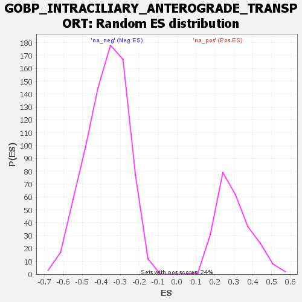

| | | Dataset | all_genes |
| Phenotype | NoPhenotypeAvailable |
| Upregulated in class | na_pos |
| GeneSet | GOBP_INTRACILIARY_ANTEROGRADE_TRANSPORT |
| Enrichment Score (ES) | 0.7097896 |
| Normalized Enrichment Score (NES) | 2.3521109 |
| Nominal p-value | 0.0 |
| FDR q-value | 0.0014434195 |
| FWER p-Value | 0.012 |
Table: GSEA Results Summary
 Fig 1: Enrichment plot: GOBP_INTRACILIARY_ANTEROGRADE_TRANSPORT
Fig 1: Enrichment plot: GOBP_INTRACILIARY_ANTEROGRADE_TRANSPORT
Profile of the Running ES Score & Positions of GeneSet Members on the Rank Ordered List

Fig 2: GOBP_INTRACILIARY_ANTEROGRADE_TRANSPORT: Random ES distribution
Gene set null distribution of ES for GOBP_INTRACILIARY_ANTEROGRADE_TRANSPORT